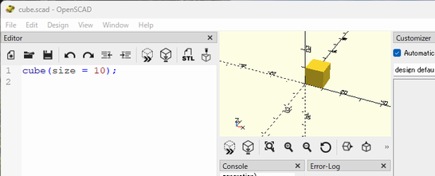

SolidPython2のインストール
概要
- SolidPython2というPythonライブラリを使用することで、PythonコードからOpenSCADプログラム（.scadファイル）を生成できる。
- Python環境が無い場合は先にPython環境を準備する（参照：Python環境の準備）。
インストール
- solidpython2をpipでインストールする。
(venv) C:\dev> pip install solidpython2
動作確認
- テキストエディタでcube.pyを作成する。
from solid2 import * model = cube(10) model.save_as_scad()
- cube.pyを実行し、scadファイルを生成する。
(venv) C:\dev>python cube.py
cube.scadが生成される
- エクスプローラ上でcube.scadを選択・実行すると、OpenSCADが起動し、生成した3Dモデルが表示される。
 - OpenSCADに3Dモデルが表示された状態で、cube.pyを編集・保存・実行すると、OpenSCADに表示された3Dモデルが更新される。
SolidPythonからSolidPython2への移行
- SolidPythonにおける`SEGMENTS=36`は、`set_global_fn(36)`と記述する。